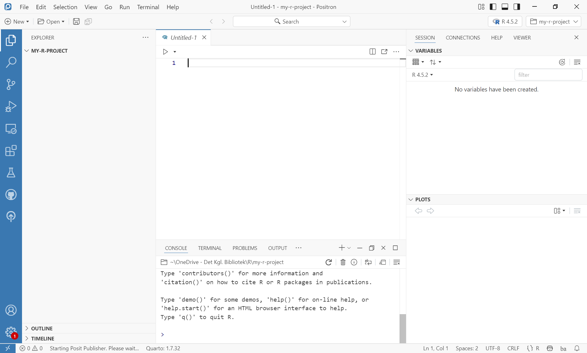

All in One View
Content from Before we Start
Last updated on 2026-11-26 | Edit this page
Estimated time: 15 minutes
Overview
Questions
- How to find your way around Positron?
- How to interact with R?
- How to manage your environment?
- How to install packages?
Objectives
- Install latest version of R
- Install latest version of Positron
- Navigate the Positron GUI
- Install additional packages using the packages tab
- Install additional packages using R code
What is R? What is Positron?
The term “R” is used to refer to both the programming
language and the software that interprets the scripts written in R.
Positron is currently a very popular way to not only write your R scripts but also to interact with the R software. Positron is the most popular IDE (Integrated Development Environmemt) for R. An IDE is a piece of software that provides tools to make programming easier.
To make it easier to interact with R, we will use Positron. To function correctly, Positron needs R and therefore both need to be installed on your computer.
Why learn R?
There are numerous reasons to learn and use R. In the following we will point out a few of them.
R does not involve lots of pointing and clicking
The learning curve might be steeper than with other software, but with R, the results of your analysis do not rely on remembering a succession of pointing and clicking, but instead on a series of written commands, and that’s a good thing! So, if you want to redo your analysis because you collected more data, you don’t have to remember which button you clicked in which order to obtain your results; you just have to run your script again.
Working with scripts makes the steps you used in your analysis clear, and the code you write can be inspected by someone else who can give you feedback and spot mistakes.
Working with scripts forces you to have a deeper understanding of what you are doing, and facilitates your learning and comprehension of the methods you use.
R code is great for reproducibility
Reproducibility is when someone else (including your future self) can obtain the same results from the same dataset when using the same analysis.
R integrates with other tools to generate manuscripts from your code. If you collect more data, or fix a mistake in your dataset, the figures and the statistical tests in your manuscript are updated automatically.
An increasing number of journals and funding agencies expect analyses to be reproducible, so knowing R will give you an edge with these requirements.
R is interdisciplinary and extensible
With 18,000+ packages that can be installed to extend its capabilities, R provides a framework that allows you to combine statistical approaches from many scientific disciplines to best suit the analytical framework you need to analyze your data. For instance, R has packages for image analysis, GIS, time series, population genetics, and a lot more.
R works on data of all shapes and sizes
The skills you learn with R scale easily with the size of your dataset. Whether your dataset has hundreds or millions of lines, it won’t make much difference to you.
R is designed for data analysis. It comes with special data structures and data types that make handling of missing data and statistical factors convenient.
R can connect to spreadsheets, databases, and many other data formats, on your computer or on the web.
R produces high-quality graphics
The plotting functionalities in R are endless, and allow you to adjust any aspect of your graph to convey most effectively the message from your data.
R has a large and welcoming community
Thousands of people use R daily. Many of them are willing to help you through mailing lists and websites such as Stack Overflow, or on the Positron Community. Questions which are backed up with short, reproducible code snippets are more likely to attract knowledgeable responses.
Not only is R free, but it is also open-source and cross-platform
Anyone can inspect the source code to see how R works. Because of this transparency, there is less chance for mistakes, and if you (or someone else) find some, you can report and fix bugs.
Because R is open source and is supported by a large community of developers and users, there is a very large selection of third-party add-on packages which are freely available to extend R’s native capabilities.

Positron and other IDEs extends what R can do, and makes it easier to write R code and interact with R. Left photo credit; Right photo credit.
A tour of Positron
Let’s start by learning about Positron, which is an Integrated Development Environment (IDE) for working with R.
The Positron IDE open-source product is free under the Elastic License 2.0. The Positron IDE is also available with a commercial license and priority email support from Posit Software, Inc.
We will use the Positron IDE to write code, navigate the files on our computer, inspect the variables we create, and visualize the plots we generate. Positron can also be used for other things (e.g., version control, developing packages, writing Shiny apps) that we will not cover during the workshop.
One of the advantages of using Positron is that all the information you need to write code is available in a single window. Additionally, Positron provides many shortcuts, autocompletion, and highlighting for the major file types you use while developing in R. Positron makes typing easier and less error-prone.
The Positron Interface
Let’s take a quick tour of Positron.

Positron is divided into four “panes”. The placement of these panes and their content can be customized. Click “Costumize layout” in the upper right corner.
The Default Layout is: - Top Center - Code editor: your scripts and documents - Bottom Center - Console: what R would look and be like without Positron - Top Right - Variables: your objects and data frames - Bottom Right - Plots: see your visualisations
Getting set up
It is good practice to keep a set of related data, analyses, and text self-contained in a single folder called the working directory. All of the scripts within this folder can then use relative paths to files. Relative paths indicate where inside the project a file is located (as opposed to absolute paths, which point to where a file is on a specific computer). Working this way makes it a lot easier to move your project around on your computer and share it with others without having to directly modify file paths in the individual scripts.
Positron provides a helpful set of tools to do this through its “Project Folder” interface, which not only creates a working directory for you but also remembers its location (allowing you to quickly navigate to it). The interface also (optionally) preserves custom settings and open files to make it easier to resume work after a break.
An easy way to work like this is to create project folders in Positron.
Create a new project folder and a new script file
- Under the
Filemenu, click onNew Folder from Template, chooseR Project, then clickNext - Enter a name for this new folder and choose a convenient location
for it. This will be your working directory for working
on this project (e.g.,
~/r_intro) - Click on
Next - Choose
Project Configurationsby selecting the version of R you wish to work with. - Click
Create - A new unsaved script is automatically created. Click ctrl/cmd-s to save
- Create a new file where you will type our scripts. Go to File >
New File > R script. Click the save icon on your toolbar and save
your script as “
script.R”.
The simplest way to open an existing Positron project folder is to open Positron and select the project folder from the drop-down menu in the upper-right corner.
By doing it this way, you have easy acces to the data, plots and scripts belonging to your project folder.
Organizing your working directory
Using a consistent folder structure across your projects will help keep things organized and make it easy to find/file things in the future. This can be especially helpful when you have multiple projects. In general, you might create directories (folders) for scripts, data, and documents. Here are some examples of suggested directories:
-
data/Use this folder to store your raw data and intermediate datasets. For the sake of transparency and provenance, you should always keep a copy of your raw data accessible and do as much of your data cleanup and preprocessing programmatically (i.e., with scripts, rather than manually) as possible. -
data_output/When you need to modify your raw data, it might be useful to store the modified versions of the datasets in a different folder. -
documents/Used for outlines, drafts, and other text. -
fig_output/This folder can store the graphics that are generated by your scripts. -
scripts/A place to keep your R scripts for different analyses or plotting.
You may want additional directories or subdirectories depending on your project needs, but these should form the backbone of your working directory.

The working directory
The working directory is an important concept to understand. It is the place where R will look for and save files. When you write code for your project, your scripts should refer to files in relation to the root of your working directory and only to files within this structure.
Using the Positron project folder structure makes this easy and
ensures that your working directory is set up properly. If you need to
check it, you can use getwd(). If for some reason your
working directory is not the same as the location of your Positron
project folder, it is likely that you opened an R script or RMarkdown
file.
Downloading the data and getting set up
For this lesson we will use the following folders in our working
directory: data/,
data_output/ and
fig_output/. Let’s write them all in
lowercase to be consistent. We can create them using the Positron
interface by clicking on the “New Folder” button in the file pane
(bottom right), or directly from R by typing at console:
R
dir.create("data")
dir.create("data_output")
dir.create("fig_output")
Begin by downloading the dataset called movie_series.csv
and place it in the data-folder you just created. You can
do this directly from Positron by copying this R-code and pasting it in
your terminal:
R
download.file("https://raw.githubusercontent.com/KUBDatalab/R-intro/main/episodes/data/movie_series.csv", "data/movie_series.csv", mode = "wb")
Interacting with R in Positron
The basis of programming is that we write down instructions for the computer to follow, and then we tell the computer to follow those instructions. We write, or code, instructions in R because it is a common language that both the computer and we can understand. We call the instructions commands and we tell the computer to follow the instructions by executing (also called running) those commands.
There are two main ways of interacting with R in Positron: by using the console or by using script files (plain text files that contain your code). The console pane (in Positron, the lower center panel) is the place where commands written in the R language can be typed and executed immediately by the computer. This is also where the results will be shown for commands that have been executed. You can type commands directly into the console and press Enter to execute those commands. However, they will be forgotten when you close the session.
Because we want our code and workflow to be reproducible, it is better to type the commands we want in the script editor and save the script. This way, there is a complete record of what we did, and anyone (including our future selves) can easily replicate the results on their computer.
Positron allows you to execute commands directly from the script editor by using the Ctrl + Enter shortcut (on Mac, Cmd + Return will work). The command on the current line in the script (indicated by the cursor) or all of the commands in selected text will be sent to the console and executed when you press Ctrl + Enter. If there is information in the console you do not need anymore, you can clear it with Ctrl + L.
At some point in your analysis, you may want to check the content of a variable or the structure of an object without necessarily keeping a record of it in your script. You can type these commands and execute them directly in the console.
If R is ready to accept commands, the R console shows a
> prompt. If R receives a command (by typing,
copy-pasting, or sent from the script editor using Ctrl +
Enter), R will try to execute it and, when ready, will show
the results and come back with a new > prompt to wait
for new commands.
If this does not happen it means that your code is incomplete. In other words R is waiting for more information in order to execute the code. To correct this, delete the latest line in the console, add the missing information in your script and run the code in question again.
Incomplete lines of code are often caused by an uneven number of parantheses or qoutation markes. It could also be caused by spelling mistakes.
Packages
In addition to the core R installation, there are in excess of 18,000 additional packages which can be used to extend the functionality of R. Many of these have been written by R users and have been made available in central repositories, like the one hosted at CRAN, for anyone to download and install into their own R environment.
Installing additional packages using Positron
You can see if you have a package installed by typing the command
installed.packages() into the console and examine the
output.
If you wish to install a package, write
install.packages() with the name of the package in
quotation marks between the two parantheses.
Because installing packages requires access to the CRAN repository, an internet connection is necessary.
It is also possible to install packages from other repositories as well as Github or the local file system, but we won’t be looking at these options in this lesson.
Installing tidyverse
For this course we need the package tidyverse, so in
order to install this packages you can write the following in the
console
R
install.packages("tidyverse")
The tidyverse package is really a package consisting of
several packages. Among these are ggplot2 and
dplyr, both of which require other packages to run
correctly. All of these packages will be installed automatically, when
you install tidyverse. The installation time may vary,
depending on what has already been installed. As the install proceeds,
messages relating to its progress will be written to the console.
Challenge
Use the console to confirm you have the tidyverse
installed.
Type tidy in the console. Based on the four letters,
Positron will auto-suggest tidyverse, if the package has
already been installed. Depending on the network connection, you might
have to allow a few seconds the the auto-suggest to work.
Key Points
- Use Positron to write and execute R scripts
- Use
install.packages()to install packages (libraries)
Content from What is the next step?
Last updated on 2026-11-26 | Edit this page
Estimated time: 10 minutes
Overview
Questions
- What do I do now?
- What is the next step?
Objectives
- Present suggestions for further reading
- Tips on problems to work on to practice
What should I do next?
Great data
First of all: If you do not have data you want to work with already, find some.
Kaggle host competitions in machine learning. For the use of those competitions, they give access to a lot of interesting datasets to work with. With more than 200.000 datasets at time of writing, it can be a bit overwhelming, so consider looking at the “datasets” available as CSV-files.
Great books
Many exists, some are available online, some are even free!
Our favorite is R for Data Science by Hadley Wickham, Mine Çetinkaya-Rundel and Garrett Grolemund.
Great sites
Most of the larger sites offering online courses in “something-with-data” offers courses that can support your learning in regards to exploratory data analysis:
Contact us!
The whole reason for the existence of KUB Datalab is to help and assist students (and teachers and researchers) working with data.
We do not guarantee that we will be able to solve your problems, but we will do our best to help you.
Our calender, containing our activities, courses, seminars, datasprints etc.
Our website
Our mail: kubdatalab@kb.dk
Key Points
- Practice is important
- Working on data that YOU find interesting is a really good idea
- The amount of ressources online is immense
- KUB Datalab is there for you
Content from possible-chatbots
Last updated on 2026-11-26 | Edit this page
Estimated time: 12 minutes
Overview
Questions
- How do you write a lesson using R Markdown and sandpaper?
Objectives
- Explain how to use markdown with the new lesson template
- Demonstrate how to include pieces of code, figures, and nested challenge blocks
En liste over de gratis tilgængelige botter.
Opfordring til at vælge forskellige
Er der nogen der betaler for det?
Key Points
- Use
.mdfiles for episodes when you want static content - Use
.Rmdfiles for episodes when you need to generate output - Run
sandpaper::check_lesson()to identify any issues with your lesson - Run
sandpaper::build_lesson()to preview your lesson locally
Content from traps-and-ethics
Last updated on 2026-11-26 | Edit this page
Estimated time: 12 minutes
Overview
Questions
- How do you write a lesson using R Markdown and sandpaper?
Objectives
- Explain how to use markdown with the new lesson template
- Demonstrate how to include pieces of code, figures, and nested challenge blocks
De er blevet bedre. Men…
Særligt ved tidyverse funktioner har vi oplevet at de har fundet
mønstret geom_ og så navnet på hvad det er for et plot man
vil lave.
Og så har botten selv opfundet nye funktioner der lyder rigtige. Men ikke eksisterer
Ofte udfordringer med at få de korrekte argumentnavne på.
Nok et udtryk for at de er trænet på de sidste 20 års materiale. Og når argumentet skiftede navn for 2 år siden, er der 9 gange så meget træningsmateriale der nævner det gamle navn…
De fleste R-funktioner bruger na.rm = TRUE for at fjerne manglende værdier før funktionen kører.
Enkelte af dem bruger andre argumentnavne og værdier. Det kan der gå ged i.
IKKE UPLOADE DINE DATA TIL CHATTY
Undertiden er det helt uproblematisk. Undertiden fører det til en overskrift i Ekstra Bladet.
Et trick er at generere fake data. Og den lette måde er
FakeDataR
generate_fake_data tager en eksisterende dataframe, og returnerer en ny, med samme struktur, og data der følger (ca) samme fordeling som de oprindelige data.
The function attempts to identify personal identifiable data.
Pas på kategoriske variable der er kodet som tal. De bliver behandlet som tal…
Øh? der er noget galt med forks? ugeb=
R
library(FakeDataR)
generate_fake_data(mtcars) |> saveRDS(file = "/episodes/data/test.rds")
WARNING
Warning in gzfile(file, mode): cannot open compressed file
'/episodes/data/test.rds', probable reason 'No such file or directory'ERROR
Error in `gzfile()`:
! cannot open the connectionR
FakeDataR::generate_llm_prompt("test.rds", write_file = FALSE)
OUTPUT
[1] "Context:\n- The attached dataset is FAKE and privacy-safe. It mirrors the real data's structure (column types, factor levels, NA/blank rates, date/time classes) but contains no real values.\n\n\nWhat I want from you:\n1) Propose an analysis plan suitable for the real dataset that has the SAME structure.\n2) Provide reusable, parameterized R code (prefer tidyverse) for EDA, key summaries, and relevant models/tests.\n3) Do NOT draw conclusions from the FAKE values; they are placeholders.\n\nFiles:\n- Fake data: test.rds\n\n\nImportant constraints:\n- Treat column names/types and missingness patterns as true.\n- If factor labels look generic (e.g., 'Category A'), treat them as placeholders.\n\n"generate_llm_prompt giver metadata på data, og en umiddelbar prompt at kaste efter
R
library(tidyverse)
OUTPUT
── Attaching core tidyverse packages ──────────────────────── tidyverse 2.0.0 ──
✔ dplyr 1.2.1 ✔ readr 2.2.0
✔ forcats 1.0.1 ✔ stringr 1.6.0
✔ ggplot2 4.0.4 ✔ tibble 3.3.1
✔ lubridate 1.9.5 ✔ tidyr 1.3.2
✔ purrr 1.2.2
── Conflicts ────────────────────────────────────────── tidyverse_conflicts() ──
✖ dplyr::filter() masks stats::filter()
✖ dplyr::lag() masks stats::lag()
ℹ Use the conflicted package (<http://conflicted.r-lib.org/>) to force all conflicts to become errorsR
mtcars |> mutate(cyl = as.factor(cyl)) |>
generate_fake_data()
OUTPUT
mpg cyl disp hp drat wt qsec vs
1 19.12528 8 285.5630 160.45427 3.594672 2.478744 22.08074 0.15520393
2 20.83148 8 250.4760 219.17735 3.163273 2.762443 21.46453 0.08426788
3 13.73261 4 445.0530 175.01981 4.852017 4.909273 21.51444 0.37254560
4 18.84371 4 415.4027 256.11758 3.254034 3.802177 14.78888 0.01618452
5 32.85777 8 426.8628 247.07998 3.605120 2.328102 22.42979 0.41851229
6 31.35890 4 189.3271 181.27970 3.692144 4.073077 21.18308 0.12045994
7 16.62281 8 381.0030 228.93947 2.881391 5.012368 22.84255 0.47129765
8 24.77898 8 447.4249 213.99830 4.287169 1.894424 16.62291 0.69072565
9 32.02274 8 286.4349 297.51431 4.008569 3.085024 21.46993 0.62103689
10 11.73729 6 163.8748 324.98904 4.804263 4.268822 18.53534 0.87199876
11 14.64353 6 125.1194 184.11127 3.802916 5.107392 19.63770 0.19674862
12 28.70341 4 290.4731 326.72711 3.117440 3.109281 15.42558 0.31999186
13 32.26000 8 197.4664 265.89354 3.937728 3.214929 15.33055 0.85331801
14 13.35693 4 304.4443 289.51817 3.307266 3.162427 22.29375 0.15461452
15 18.76079 6 420.6877 175.99092 4.295170 4.412270 20.10299 0.22983618
16 24.18906 4 415.0916 218.96507 3.610416 1.852950 19.67466 0.13297133
17 14.23219 4 413.6387 155.19942 3.487825 4.572270 22.74984 0.05972546
18 20.47704 8 105.8257 281.74574 3.202189 3.837502 15.91935 0.77615197
19 11.17313 4 460.4110 71.75469 4.195229 4.790217 17.96971 0.13904895
20 30.18749 4 140.6490 116.82509 2.766975 4.459609 19.42785 0.13747183
21 12.62084 6 112.6879 288.25430 2.807380 3.079154 18.04064 0.56302699
22 23.52176 4 146.0627 130.58472 3.255920 1.801917 19.03051 0.46109653
23 28.56941 4 248.3753 153.28623 4.868769 1.749756 18.32726 0.81476531
24 30.62316 4 238.6245 325.31575 3.502113 3.395571 20.85065 0.17547563
25 19.30793 6 105.8283 298.61931 4.565078 5.160184 21.97693 0.63407930
26 19.65146 8 300.8513 102.19537 4.134456 2.690317 20.69228 0.36893424
27 19.29299 8 442.7713 187.27476 2.907509 2.944827 21.52961 0.41838363
28 10.59043 6 436.5720 60.27256 2.810458 2.622090 21.66539 0.35195645
29 28.64031 8 449.0413 315.16510 3.605023 1.868032 14.94702 0.85663882
30 30.21299 4 128.4854 205.12664 3.543653 4.845567 15.93812 0.03130699
am gear carb
1 0.44222772 4.386911 4.028659
2 0.92155582 3.273818 5.743337
3 0.37530759 4.182047 1.656272
4 0.66598338 4.297911 4.872638
5 0.72119632 4.834186 4.279150
6 0.03743467 3.851676 7.309161
7 0.74756056 4.978430 1.848335
8 0.91615523 3.291862 4.171507
9 0.76509827 4.068698 7.807860
10 0.39298628 4.239361 6.588375
11 0.82596859 3.807205 4.874989
12 0.30985715 4.909649 4.604931
13 0.87695469 4.279126 7.481987
14 0.88705566 4.655367 1.641812
15 0.83716280 3.505395 1.814594
16 0.69400789 3.786770 7.124489
17 0.33284587 4.976410 1.635591
18 0.22663963 3.431469 2.251738
19 0.31014547 3.422416 3.875352
20 0.85838551 3.989730 1.915143
21 0.14615992 4.755014 5.684965
22 0.85522485 4.122001 5.884387
23 0.10762053 4.367061 7.953113
24 0.36964608 4.291887 2.696736
25 0.09497041 4.851686 6.575180
26 0.87450564 3.612453 4.301710
27 0.65444648 3.142945 5.329289
28 0.16266344 4.003126 3.760610
29 0.98026206 4.037026 7.883665
30 0.81038155 4.639823 2.309268R
summary(mtcars)
OUTPUT
mpg cyl disp hp
Min. :10.40 Min. :4.000 Min. : 71.1 Min. : 52.0
1st Qu.:15.43 1st Qu.:4.000 1st Qu.:120.8 1st Qu.: 96.5
Median :19.20 Median :6.000 Median :196.3 Median :123.0
Mean :20.09 Mean :6.188 Mean :230.7 Mean :146.7
3rd Qu.:22.80 3rd Qu.:8.000 3rd Qu.:326.0 3rd Qu.:180.0
Max. :33.90 Max. :8.000 Max. :472.0 Max. :335.0
drat wt qsec vs
Min. :2.760 Min. :1.513 Min. :14.50 Min. :0.0000
1st Qu.:3.080 1st Qu.:2.581 1st Qu.:16.89 1st Qu.:0.0000
Median :3.695 Median :3.325 Median :17.71 Median :0.0000
Mean :3.597 Mean :3.217 Mean :17.85 Mean :0.4375
3rd Qu.:3.920 3rd Qu.:3.610 3rd Qu.:18.90 3rd Qu.:1.0000
Max. :4.930 Max. :5.424 Max. :22.90 Max. :1.0000
am gear carb
Min. :0.0000 Min. :3.000 Min. :1.000
1st Qu.:0.0000 1st Qu.:3.000 1st Qu.:2.000
Median :0.0000 Median :4.000 Median :2.000
Mean :0.4062 Mean :3.688 Mean :2.812
3rd Qu.:1.0000 3rd Qu.:4.000 3rd Qu.:4.000
Max. :1.0000 Max. :5.000 Max. :8.000 Key Points
- Avoid uploading your real data to the chat
- Use packages like FakeDataR for constructing fake data representing the structure of your data.
Content from Techniques
Last updated on 2026-11-26 | Edit this page
Estimated time: 12 minutes
Overview
Questions
- How do you write a lesson using R Markdown and sandpaper?
Objectives
- Explain how to use markdown with the new lesson template
- Demonstrate how to include pieces of code, figures, and nested challenge blocks
Byg kontekst
Bed den om at tænke
MVP
Små trin
Key Points
- Use
.mdfiles for episodes when you want static content - Use
.Rmdfiles for episodes when you need to generate output - Run
sandpaper::check_lesson()to identify any issues with your lesson - Run
sandpaper::build_lesson()to preview your lesson locally
Content from What is an LLM?
Last updated on 2026-11-26 | Edit this page
Estimated time: 12 minutes
Overview
Questions
- How do you write a lesson using R Markdown and sandpaper?
Objectives
- Explain how to use markdown with the new lesson template
- Demonstrate how to include pieces of code, figures, and nested challenge blocks
Traditionally we have called the a stocastic parrot.
Det statistisk set mest sandsynlige næste ord.
Det er nok lidt mere kompliceret i dag…
Key Points
- Use
.mdfiles for episodes when you want static content - Use
.Rmdfiles for episodes when you need to generate output - Run
sandpaper::check_lesson()to identify any issues with your lesson - Run
sandpaper::build_lesson()to preview your lesson locally